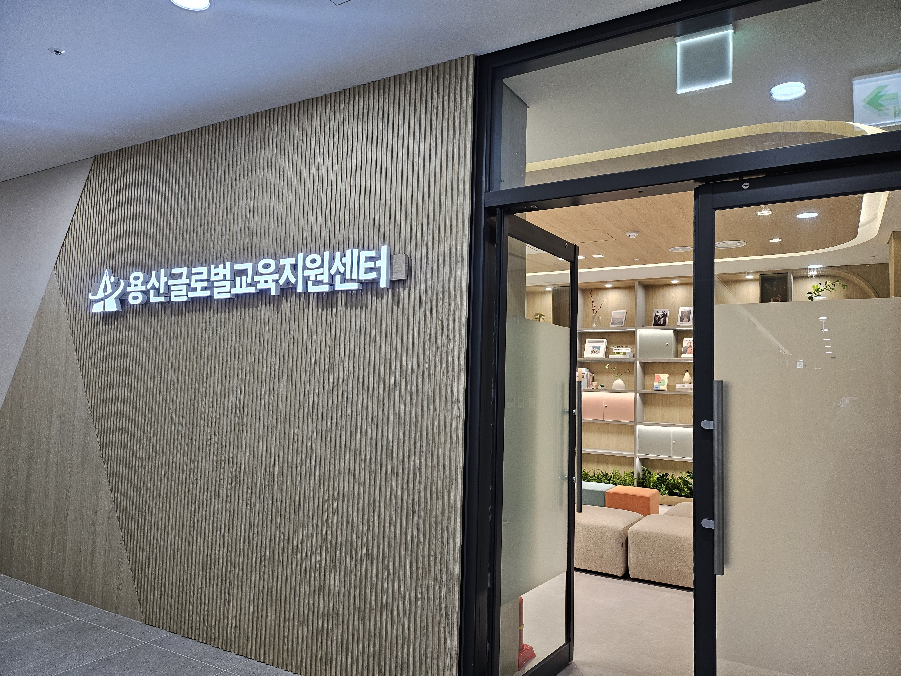

용산구, 서울 최초 교육국제화특구 추진…글로벌 인재 양성 본격화
용산글로벌교육지원센터 기반, 국제 미래교육 도시 도약 추진

[시사포커스 / 김재록 기자] 서울 용산구(구청장 김경대)가 서울시 자치구 최초로 교육국제화특구 지정을 추진한다. 용산구는 민선9기 핵심 공약사업인 '교육국제화특구 지정'을 목표로, 한강대로71길 47 소재 '용산글로벌교육지원센터(3층)'를 중심으로 국제 미래인재 양성 체계를 본격 가동한다고 밝혔다. 주한 대사관이 밀집하고 세계 각국의 다양한 문화가 공존하는 지역 특성을 살려, 학생들이 국제적 감각을 기를 수 있는 최적의 교육환경 구축에 역점을 두고 있다.
용산구에 따르면, 지난 10월 개관한 용산글로벌교육지원센터는 교육청 및 지역 내 학교와 유기적 협력체계를 구축해 교육국제화 거버넌스의 전초기지 역할을 맡는다. 센터는 ▲Y-리더 성장교육 ▲글로벌 인재 양성 ▲진학 지원 ▲학부모 교육 지원 ▲지역연계 사업 ▲네트워크 등 6개 항목의 프로그램을 운영하며, 유엔총회를 체험하는 '글로벌 리더스쿨'을 통해 세계시민의식과 인공지능(AI) 활용 능력을 함께 키울 수 있다. 김경대 용산구청장은 "교육은 미래세대를 위한 가장 가치 있는 투자이자 도시의 지속가능한 경쟁력을 결정하는 핵심 자산"이라며 "용산글로벌교육지원센터를 중심으로 학생들이 세계를 무대로 꿈을 키우고 미래를 주도할 수 있는 교육환경을 만들어 나가겠다"라고 말했다.
용산구는 센터를 통해 맞춤형 진학 상담, 학습 전략 지도, 심리 상담, 정기 진학설명회, 대학입시 전략특강 등을 제공해 교육 격차 해소에 나설 방침이다. 공식 누리집(www.yglobal.or.kr)을 통해 각종 프로그램 신청 서비스를 제공하며, AI 영어학습 기반 구축으로 기초회화 능력과 디지털 역량을 함께 키울 수 있도록 지원한다. 김 구청장은 "교육국제화특구 지정 추진을 통해 용산을 대한민국을 대표하는 국제 미래교육 도시로 도약시키고, 모든 아이가 차별 없이 양질의 교육 기회를 누릴 수 있도록 최선을 다하겠다"라고 밝혔다.